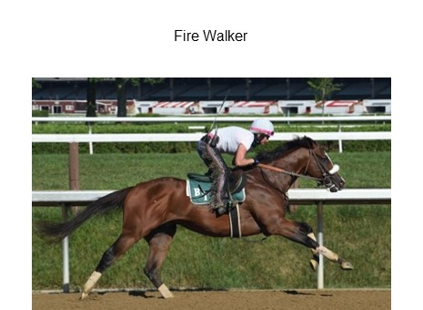

<!DOCTYPE html>
<html>
  <head>
    <script src="https://unpkg.com/jspsych@7.3.3"></script>
    <script src="https://unpkg.com/@jspsych/plugin-call-function@1.1.2"></script>
    <script src="https://unpkg.com/@jspsych/plugin-survey-text@1.0.1"></script>
    <script src="https://unpkg.com/@jspsych/plugin-survey-html-form@1.0.1"></script>
    <script src="https://unpkg.com/@jspsych/plugin-preload"></script>
    <script src="https://unpkg.com/@jspsych/plugin-html-button-response@1.1.2"></script>
    
    <link href="https://unpkg.com/jspsych@7.3.3/css/jspsych.css" rel="stylesheet" type="text/css" />
  </head>
  <body></body>
  <script>
    /* initialize jsPsych */
    var jsPsych = initJsPsych({
      on_finish: function() {
        jsPsych.data.displayData();
      }
    });

    var timeline = [];

    var audio = null;

    var preload = {
        type: jsPsychPreload,
        auto_preload: true 
    }


    // need this for the time being until we include all consent forms etc.
    var before_audio = {
        type: jsPsychHtmlButtonResponse,
        stimulus: 'Click to start',
        choices: ['OK']
    }
    timeline.push(before_audio);

    
    var bet = {
        type: jsPsychSurveyHtmlForm,
        html: `<div>
            
            
            
            
            <audio src='critical_apocalypse_native_disfluent.mp3'/>
            </div>`,
        preamble: '<p> Place your bets on <input name="first" type="text" />, <input name="second" type="text" /></p>'
    }

    timeline.push(bet);

    var stop_audio = {
        type: jsPsychCallFunction,
        func: function(){
            audio.pause();
    }
    }
    jsPsych.run(timeline);
  </script>
</html>